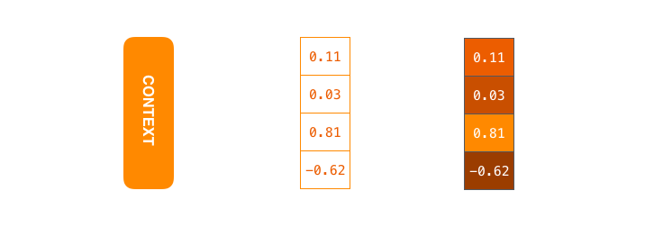
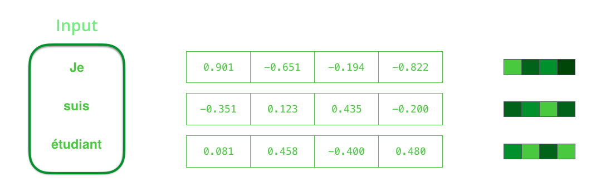
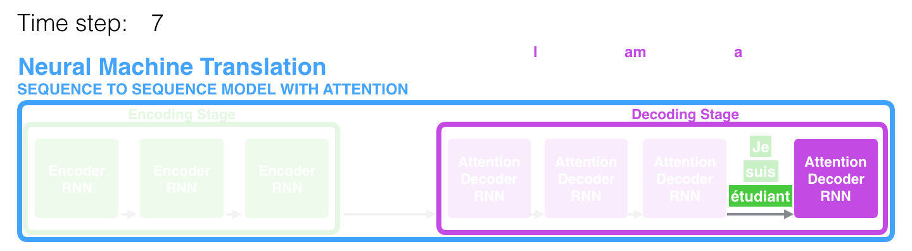
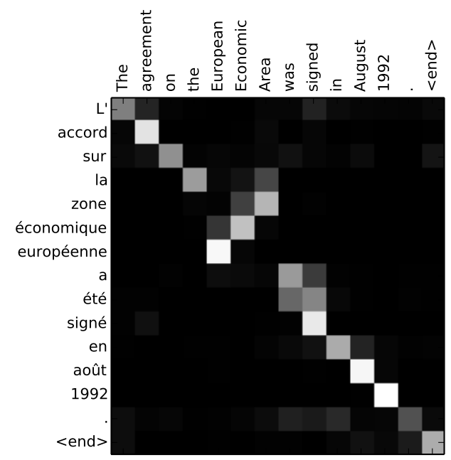

Model sequence-to-sequence (seq2seq) adalah model deep learning yang meraih banyak keberhasilan pada tugas seperti penerjemahan mesin (machine translation), peringkasan teks, dan pemberian keterangan citra (image captioning). Google Translate mulai memakai model semacam ini secara produksi pada akhir 2016. Model ini dijelaskan pada dua makalah perintis, yaitu Sutskever dkk., 2014 dan Cho dkk., 2014.
Namun, memahami model ini sampai cukup paham untuk mengimplementasikannya menuntut kita mengurai serangkaian konsep yang saling bertumpuk. Banyak gagasan ini akan lebih mudah dicerna bila disampaikan secara visual, dan itulah tujuan tulisan ini. Anda perlu sedikit pemahaman awal tentang deep learning untuk mengikutinya. Semoga tulisan ini menjadi pendamping yang berguna saat membaca makalah-makalah tadi (dan makalah attention yang ditautkan kemudian).
Model sequence-to-sequence menerima sebuah barisan item (kata, huruf, fitur citra, dan sebagainya) lalu mengeluarkan barisan item lain. Model yang sudah terlatih bekerja seperti ini:
Pada neural machine translation, sebuah barisan adalah deretan kata yang diproses satu demi satu. Keluarannya juga berupa deretan kata:
Melihat ke Dalam
Di balik layar, model ini tersusun atas sebuah encoder (penyandi) dan sebuah decoder (penyahsandi).
Encoder memproses setiap item pada barisan masukan, lalu memadatkan informasi yang ditangkapnya menjadi sebuah vektor yang disebut context (konteks). Setelah selesai memproses seluruh barisan masukan, encoder mengirimkan context tersebut ke decoder, yang kemudian mulai menghasilkan barisan keluaran item demi item.
Hal yang sama berlaku pada penerjemahan mesin.
Pada kasus penerjemahan mesin, context berupa sebuah vektor (pada dasarnya sebuah deret angka). Encoder dan decoder umumnya sama-sama berupa recurrent neural network (RNN), yaitu jaringan saraf yang memproses barisan secara berurutan.

Secara rancangan, RNN menerima dua masukan pada setiap langkah waktu: sebuah input (pada encoder, satu kata dari kalimat masukan) dan sebuah hidden state (keadaan tersembunyi, yaitu vektor keadaan internal yang dibawa RNN dari satu langkah ke langkah berikutnya). Kata itu sendiri perlu diwakili sebagai vektor. Untuk mengubah kata menjadi vektor, kita memakai kelas metode bernama word embedding. Metode ini mengubah kata menjadi vektor di sebuah ruang yang menangkap banyak informasi makna dan semantik kata tersebut (misalnya hubungan raja - pria + wanita = ratu).

Setelah memperkenalkan vektor utama kita, mari rangkum kembali mekanika RNN dan tetapkan bahasa visual untuk menggambarkan model ini:
Langkah RNN berikutnya mengambil vektor masukan kedua dan hidden state pertama untuk menghasilkan keluaran pada langkah waktu itu. Pada bagian selanjutnya, animasi serupa akan dipakai untuk menggambarkan vektor di dalam model neural machine translation.
Pada visualisasi berikut, setiap denyut pada encoder atau decoder menandakan RNN sedang memproses masukannya dan menghasilkan keluaran untuk langkah waktu tersebut. Karena encoder dan decoder sama-sama RNN, pada tiap langkah waktu salah satu RNN melakukan pemrosesan dan memperbarui hidden state-nya berdasarkan masukan saat ini serta masukan-masukan sebelumnya yang sudah dilihat.
Mari amati hidden state pada encoder. Perhatikan bahwa hidden state terakhir sebenarnya adalah context yang diteruskan ke decoder.
Decoder juga menyimpan hidden state yang diteruskan dari satu langkah waktu ke langkah berikutnya. Hidden state decoder tidak digambarkan pada visual ini karena untuk saat ini kita berfokus pada bagian-bagian utama model.
Sekarang mari lihat cara lain memvisualisasikan model sequence-to-sequence. Animasi ini akan memudahkan pemahaman atas gambar statis yang menggambarkan model semacam ini. Cara pandang ini disebut tampilan "terurai" (unrolled): alih-alih menampilkan satu decoder, kita menampilkan satu salinan decoder untuk tiap langkah waktu. Dengan begitu kita bisa mengamati masukan dan keluaran pada setiap langkah waktu.
Sekarang Mari Perhatikan Attention
Vektor context ternyata menjadi sumbatan (bottleneck) bagi model jenis ini. Ia menyulitkan model dalam menangani kalimat panjang. Solusinya diusulkan pada Bahdanau dkk., 2014 dan Luong dkk., 2015. Kedua makalah ini memperkenalkan dan menyempurnakan teknik bernama attention, yang sangat meningkatkan kualitas sistem penerjemahan mesin. Attention memungkinkan model memusatkan perhatian pada bagian-bagian masukan yang relevan sesuai kebutuhan.

Mari lanjutkan mengamati model attention pada tingkat abstraksi tinggi ini. Model attention berbeda dari model sequence-to-sequence klasik dalam dua hal utama.
Pertama, encoder meneruskan jauh lebih banyak data ke decoder. Alih-alih hanya meneruskan hidden state terakhir dari tahap penyandian, encoder meneruskan seluruh hidden state ke decoder:
Kedua, decoder attention melakukan satu langkah tambahan sebelum menghasilkan keluarannya. Agar dapat berfokus pada bagian masukan yang relevan untuk langkah penyahsandian ini, decoder melakukan hal berikut:
- Mengamati himpunan hidden state encoder yang diterimanya. Tiap hidden state encoder paling erat berkaitan dengan satu kata tertentu pada kalimat masukan.
- Memberi skor pada tiap hidden state (untuk sementara kita abaikan dulu bagaimana skor ini dihitung).
- Mengalikan tiap hidden state dengan skornya yang sudah di-softmax, sehingga memperkuat hidden state berskor tinggi dan menenggelamkan hidden state berskor rendah.
Latihan pemberian skor ini dilakukan pada setiap langkah waktu di sisi decoder.
Sekarang mari satukan semuanya pada visualisasi berikut dan amati cara kerja proses attention:
- RNN decoder attention menerima embedding dari token <END> dan sebuah hidden state decoder awal.
- RNN memproses masukannya, menghasilkan sebuah keluaran dan sebuah vektor hidden state baru (h4). Keluarannya dibuang.
- Langkah attention: kita memakai hidden state encoder dan vektor h4 untuk menghitung sebuah vektor context (C4) untuk langkah waktu ini.
- Kita menggabungkan (concatenate) h4 dan C4 menjadi satu vektor.
- Kita melewatkan vektor itu melalui sebuah jaringan feedforward (yang dilatih bersama-sama dengan model).
- Keluaran jaringan feedforward menunjukkan kata keluaran untuk langkah waktu ini.
- Ulangi untuk langkah-langkah waktu berikutnya.
Berikut cara lain mengamati bagian kalimat masukan mana yang kita perhatikan pada tiap langkah penyahsandian:
Perhatikan bahwa model tidak sekadar menyelaraskan kata pertama keluaran dengan kata pertama masukan secara membabi buta. Model justru belajar dari tahap pelatihan tentang cara menyelaraskan kata pada pasangan bahasa tersebut (Prancis dan Inggris pada contoh kita). Contoh seberapa presisi mekanisme ini dapat dilihat dari makalah attention yang disebutkan di atas:

Bila Anda merasa siap mempelajari implementasinya, simak Tutorial Neural Machine Translation (seq2seq) dari TensorFlow.